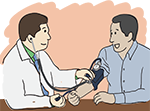
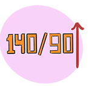
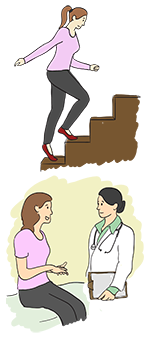
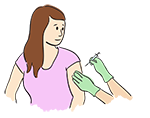

Module: Emergencies
Elaine A. Furst, RN, MA and Dinesh Khanna, MD, MS
Resources
Monthly blood pressure log
Keep track of your blood pressure with this simple chart
Printout PDFEmergencies
How do I know if the symptoms I’m experiencing are an emergency?
Although scleroderma is generally a long-lasting, not a temporary, disease, there are some times when immediate medical care is necessary. This module will cover the most common emergency situations.
Increasing blood pressure can mean you have scleroderma renal crisis.
Renal crisis is a serious condition that affects your kidneys. Ask your doctor what your blood pressure should be. Ask him or her to write out emergency instructions if you ever have to go to the emergency room with a renal crisis.
Keep a record of your blood pressure by using a blood pressure log, especially during first 1 to 3 years of the disease. Measure your blood pressure 3 times a week. This very important if you have diffuse scleroderma and/or you have been told that you have anti-RNA polymerase 3 antibody. If you notice that your blood pressure is higher than usual or if you have symptoms that suggest high blood pressure (headaches you didn’t have before, blurry vision, chest pain, shortness of breath), take your blood pressure again and call your doctor.
The first sign of a scleroderma renal crisis is blood pressure that is 140/90 or higher. Scleroderma renal crisis can occur quickly. It can lead to kidney failure and even death if the high blood pressure is not lowered quickly.
- If your blood pressure is higher than 140/90, take your blood pressure again 2 hours later. You may or may not have symptoms. In some people, their blood pressure is on the lower side, such as 110/60.
- If your BP, is elevated by 20 or more points, carefully check your BP especially if you also have symptoms. If it is still high, call your doctor. Tell him or her what your blood pressure is, and go to an emergency room.
- When you get to the emergency room, explain that you have scleroderma and are probably having a renal crisis. Scleroderma renal crisis can also occur even if your blood pressure is normal, although this does not happen very often.
- Watch out for symptoms such as headache, blurry vision, chest pain, and shortness of breath. If you have these symptoms, you should quickly go to your doctor or the emergency room, depending on how severe they are.
- If you get treatment within a few hours or 1 to 2 days, the renal crisis can be treated effectively. Angiotensin-converting enzymes such as captopril (Capoten®) are important for management of renal crisis. However, prophylactic treatment is usually not effective in preventing this, as the dose is not sufficient. In addition, the prophylactic treatment may lead to delayed diagnosis of renal crisis.
Shortness of breath
If you have pulmonary hypertension, pulmonary fibrosis, or heart problems, you may have periods of shortness of breath. If this occurs while you are walking, climbing stairs, lifting, or doing other exercise, stop what you are doing and sit down and rest. If you notice that your shortness of breath is getting worse over time and you aren’t able to do your normal daily activities without resting, or that you are resting more than usual, tell your doctor. He or she may prescribe medications or oxygen, or both, to help you breathe better.
Shortness of breath may also occur from other health conditions, such as congestive heart failure, heart valve insufficiency, or gastrointestinal bleeding (bleeding related to the stomach or intestines). Gastrointestinal bleeding is a very serious emergency. You should tell your doctor if your stools are black (similar to coal tar). This means that there is slow bleeding in your stomach or intestine. It is also a very serious emergency if you see bright red blood in your stools. This may mean fast bleeding and you should go to the emergency room.
Infections
Because people with scleroderma often take medicines that suppress their immune system, they are more likely to get infections.
- Everyone with scleroderma should get a flu shot with inactive influenza vaccine every year. This should be given with a needle into a muscle, and not as a nasal spray.
- If you have heart or lung disease (such as lung fibrosis) you should get a pneumonia shot to prevent pneumonia caused by a common bacteria. Do not get the shot if you are allergic to the vaccine or one of its parts.
- Also consider getting the herpes zoster (shingles) shot.
- You should also talk to your doctor to discuss a tetanus shot and other preventive shots. For more information, go to www.cdc.gov.
- Keep your hands clean, and use hand sanitizer.
- In addition, poor circulation in your fingers and toes can cause breaks in the skin that are hard to heal and may become infected. Infection can be hard to treat. So try to prevent it, if possible, by soaking the open sore and putting on antibiotic ointment and bandages. It is important to see your doctor, and maybe even a wound specialist, if the wound doesn’t heal in a reasonable period of time.
It is very important to quickly treat any other infection that you might have, such as a bladder infection, a cold or bronchitis, a vaginal infection, a gastrointestinal infection, or eye or ear infections.
When should I ask to see a specialist?
Your internist or family doctor will most often be the one to refer you to a specialist for testing or treatment. Scleroderma can affect many parts of your body, from the esophagus (the tube that goes from your mouth to your stomach) to the lungs to the skin. You may need to ask to see a doctor who specializes in a specific area of medicine based on your symptoms.